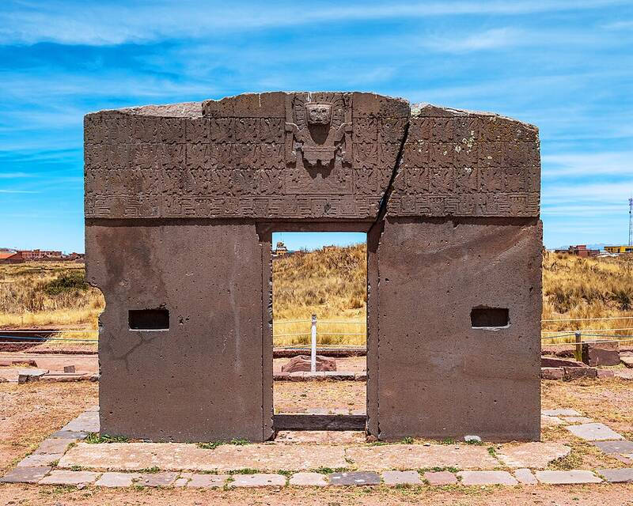

Tiwanaku and Puma Punku
Near Lake Titicaca, Bolivia, about AD 500 to 1000

The Akapana pyramid and the precisely cut stone blocks of Puma Punku. Ancient-astronaut writers cite the stonework as beyond ancient skill, but archaeologists have documented the Tiwanaku culture's tools, quarries, and techniques. 1
Open in the interactive Watcher
Related
- Aliens built or helped build ancient monuments Claim
- Graham Hancock Person
- Erich von Däniken Person
Sources
- Tiwanaku Wikipedia